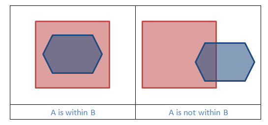
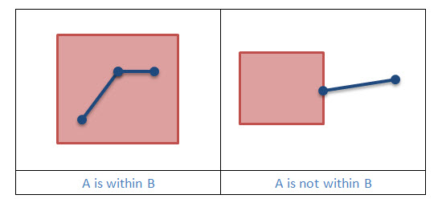
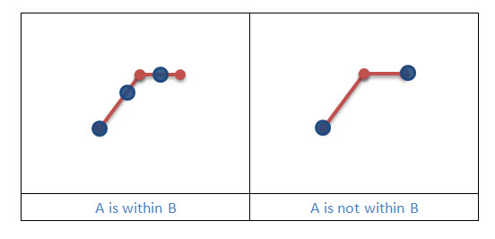

Within
One geometry is within another if it is a subset of the other geometry and their interiors have at least one point in common. Within is the inverse of Contains.
In the following pictures Geometry A is blue, and Geometry B is red.
|  |
|  |
|  |
Example 1: Is Geometry A within Geometry B?
static boolean geometryIsWithin(Geometry geometryA, Geometry geometryB, SpatialReference sr)
{
boolean isWithin = OperatorWithin.local().execute(geometryA, geometryB, sr, null);
return isWithin;
}